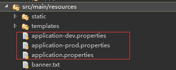
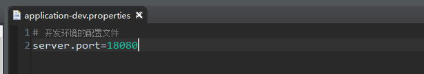
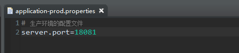
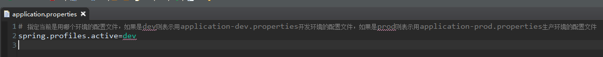

在src/main/resources目录下提供两种不同环境的配置文件（开发环境和生产环境）
配置文件要遵守：application-{profile}.properties这种格式的，如application-dev.properties（开发环境）、application-prod.properties（生产环境）
再提供application.properties文件用来指定用哪个环境的配置文件
文件结构及文件内容如下：
文件结构

application-dev.properties文件内容

application-prod.properties文件内容

application.properties文件内容
